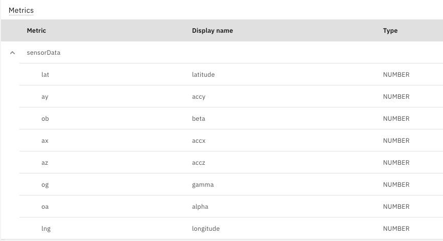

Objectives
In this Exercise you will learn how to setup Monitor to receive data from your mobile device.
- Create a device type and setup metrics in Monitor
- Create a device in Monitor representing your mobile device
Create a device type and setup metrics in Monitor
Create a device type
- Go to Setup in Monitor
- Go to Devices tab
- Click on + button to create a device type
- Choose Empty/Basic template
- Next
- Take note of the name you give as you will need this in the mobile app config
- Create
Create Metrics in the device type
- Under Metrics section click Add metric
- Click Add metric
a. Enter lat for metric
b. Enter latitude for display name
c. Enter sensorData for event
d. Choose Number for type - Click Add metric
a. Enter lng for metric
b. Enter longitude for display name
c. Choose sensorData for event
d. Choose Number for type - Click Add metric
a. Enter ax for metric
b. Enter accx for display name
c. Choose sensorData for event
d. Choose Number for type - Click Add metric
a. Enter ay for metric
b. Enter accy for display name
c. Choose sensorData for event
d. Choose Number for type - Click Add metric
a. Enter az for metric
b. Enter accz for display name
c. Choose sensorData for event
d. Choose Number for type - Click Add metric
a. Enter oa for metric
b. Enter alpha for display name
c. Choose sensorData for event
d. Choose Number for type - Click Add metric
a. Enter ob for metric
b. Enter beta for display name
c. Choose sensorData for event
d. Choose Number for type - Click Add metric
a. Enter og for metric
b. Enter gamma for display name
c. Choose sensorData for event
d. Choose Number for type - Click Add
- Click Save
The metrics should look like this:

Create a device in Monitor representing your mobile device
- Click the blue Setup in the top left which will take you to the device types list
- The device type you created should be selected
- Add device
- Enter a name for your mobile device using your initials i.e. MLLiPhone
- Take note of the name you give as you will need this in the app config
- Click Add
- Copy the authentication token as you will need it in the mobile app config
Note: One device in Monitor needs to be used per mobile device sending data. If you want to use more mobile devices then create additional devices in Monitor.